Voici quelques ouvrages concernant indirectement Concorde :
Pilote d'essais - 2005 - André Turcat - Cherche midi - 24x15 236p 
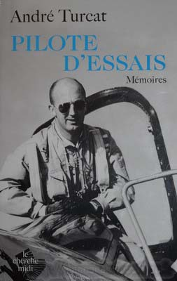
Le chef des essais en vol de Sud Aviation nous raconte sa carrière de pilote d'essai.
Pas de photos.
Pilote d'essais II- 2009 - André Turcat - Cherche midi - 24x15 200p 
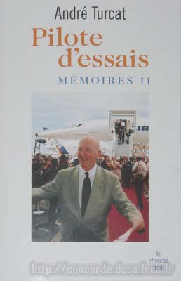
La suite du précédent ouvrage, plus nostalgique.
Pas de photos.
Test pilot - 1998 - Brian Trubshaw - Sutton Publishing Limited - 20x13 240p 
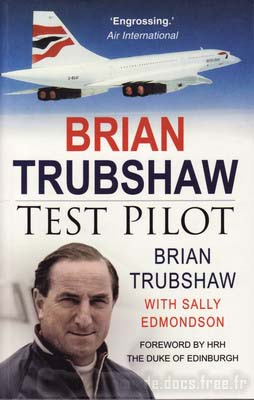
La carrière du pilote d'essai qui fit décoller le premier Concorde Anglais.
Un encart central avec de nombreuses photos en noir et blanc.
Présenté ici dans sa réédition de 2006.
Rigueur et audace aux essais en vol - 1992 - Jacques Noetinger - Nouvelles éditions latines - 364p 
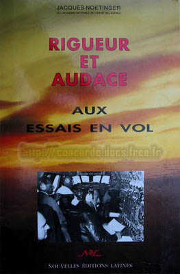
Une présentation détaillée de tous ces pilotes qui ont pris de gros risques en pilotant des avions parfois dangereux,
et qui ont participé activement
au renouveau de l'aéronautique Française après la seconde guerre mondiale.
CONCORDE British Airways - DVD - 1996 - 19x14 
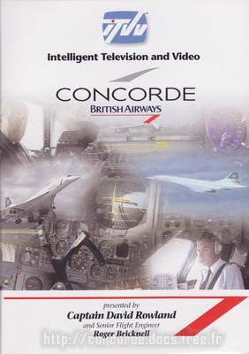
Double DVD de 300 minutes, en Anglais.
Vivez de l'intérieur du cockpit d'un Concorde de British Airways un aller-retour Londres-New York.
Si vous deviez n'avoir qu'un seul DVD sur Concorde, ce serait assurément celui-là.
AIR FRANCE - 2008 - Geoff Jones - Midland - 26x21 160p 
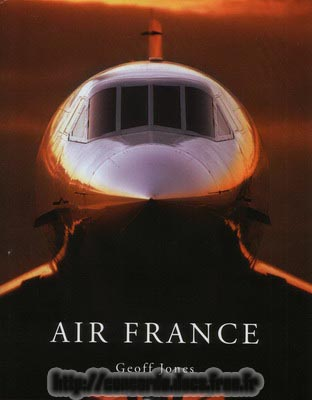
Edité à l'occasion des 75 ans d'Air France, cet ouvrage en Anglais contient un chapitre dédié à Concorde.
Il est illustré avec de magnifiques photos de tous les avions qui ont jalonné l'histoire d'Air France.
Histoire Aerospatiale Toulouse - Aerotheque - 120p 
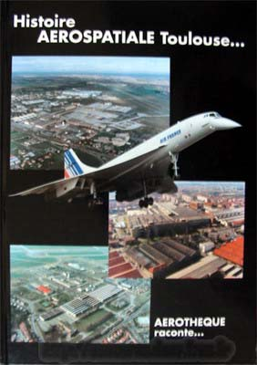
Tout l'historique industrielle de cette ville entièrement tournée vers l'aéronautique.
Les merveilles de l'avion à réaction - 2000 -Yves de Bouard/Giovanni Giannini /Jean Massé
Editions des deux coqs d'or - 26x19 157p 
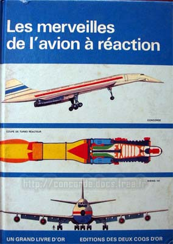
Faussement d’apparence scolaire, c’est un livre intéressant et technique sur les avions à réaction.
20 pages consacrées à Concorde avec quelques photos noir & blanc
inédites.
Le Musée de l'Air et de l'Espace - 1982 - Pierre Lissarrague & Alain Dégardin - Ouest France - 32p 
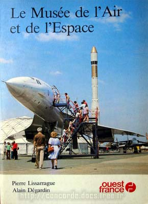
Petit guide sur l'historique du Musée du Bourget.
Les ailes du rêve - Winiger - Air France - 24x16 28p 
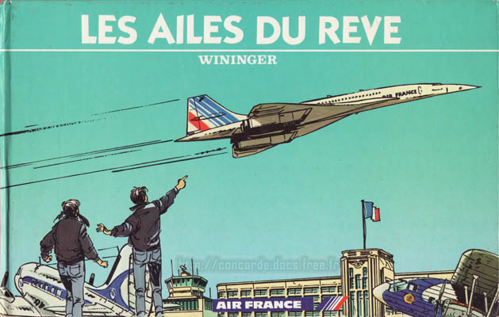
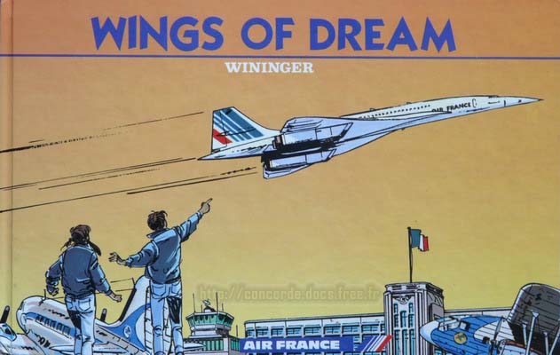
Une bande dessinée sur l'histoire de la compagnie Air France, présentée ici en Français et en Anglais.
Catalogue Breitling - 2003 - Images Alain Ernoult - 195p 
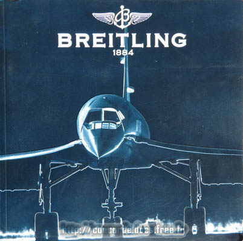
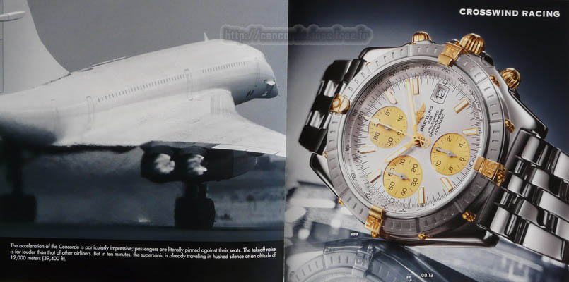
Avec une couverture en relief et 195 pages en papier glacé épais, ce catalogue est très luxueux.
Des photos de magnifiques montres cotoient celles de Concorde, faites par Alain Ernoult,
qui est aussi l'auteur d'un ouvrage dédié au bel oiseau blanc (présenté ici).